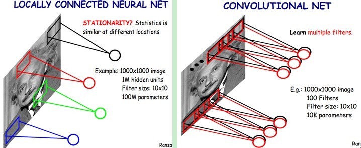

简介
卷积神经网络是近年发展起来，并引起广泛重视的一种高效识别方法。20世纪60年代，Hubel和Wiesel在研究猫脑皮层中用于局部敏感和方向选择的神经元时发现其独特的网络结构可以有效地降低反馈神经网络的复杂性，继而提出了卷积神经网络（Convolutional Neural Networks-简称CNN）。现在，CNN已经成为众多科学领域的研究热点之一，特别是在模式分类领域，由于该网络避免了对图像的复杂前期预处理，可以直接输入原始图像，因而得到了更为广泛的应用。
一般地，CNN的基本结构包括两层：
其一为特征提取层：每个神经元的输入与前一层的局部接受域相连，并提取该局部的特征。一旦该局部特征被提取后，它与其它特征间的位置关系也随之确定下来；
其二是特征映射层：网络的每个计算层由多个特征映射组成，每个特征映射是一个平面，平面上所有神经元的权值相等。特征映射结构采用影响函数核小的sigmoid函数作为卷积网络的激活函数，使得特征映射具有位移不变性。此外，由于一个映射面上的神经元共享权值，因而减少了网络自由参数的个数。卷积神经网络中的每一个卷积层都紧跟着一个用来求局部平均与二次提取的计算层，这种特有的两次特征提取结构减小了特征分辨率。
CNN主要用来识别位移、缩放及其他形式扭曲不变性的二维图形。由于CNN的特征检测层通过训练数据进行学习，所以在使用CNN时，避免了显示的特征抽取，而隐式地从训练数据中进行学习；
再者由于同一特征映射面上的神经元权值相同，所以网络可以并行学习，这也是卷积网络相对于神经元彼此相连网络的一大优势。卷积神经网络以其局部权值共享的特殊结构在语音识别和图像处理方面有着独特的优越性，其布局更接近于实际的生物神经网络，权值共享降低了网络的复杂性，特别是多维输入向量的图像可以直接输入网络这一特点避免了特征提取和分类过程中数据重建的复杂度。
卷积神经网络
在图像处理中，往往把图像表示为像素的向量，比如一个1000×1000的图像，可以表示为一个1000000的向量。在上一节中提到的神经网络中，如果隐含层数目与输入层一样，即也是1000000时，那么输入层到隐含层的参数数据为：\(1000000×1000000=10^{12}\)，这样就太多了，基本没法训练。所以图像处理要想练成神经网络大法，必先减少参数加快速度。就跟辟邪剑谱似的，普通人练得很挫，一旦自宫后内力变强剑法变快，就变的很牛了。
局部感知
卷积神经网络有两种神器可以降低参数数目，第一种神器叫做局部感知野。一般认为人对外界的认知是从局部到全局的，而图像的空间联系也是局部的像素联系较为紧密，而距离较远的像素相关性则较弱。因而，每个神经元其实没有必要对全局图像进行感知，只需要对局部进行感知，然后在更高层将局部的信息综合起来就得到了全局的信息。网络部分连通的思想，也是受启发于生物学里面的视觉系统结构。视觉皮层的神经元就是局部接受信息的（即这些神经元只响应某些特定区域的刺激）。如下图所示：左图为全连接，右图为局部连接。

在上右图中，假如每个神经元只和10×10个像素值相连，那么权值数据为1000000×100个参数，减少为原来的千分之一。而那10×10个像素值对应的10×10个参数，其实就相当于卷积操作。
参数共享
但其实这样的话参数仍然过多，那么就启动第二级神器，即权值共享。在上面的局部连接中，每个神经元都对应100个参数，一共1000000个神经元，如果这1000000个神经元的100个参数都是相等的，那么参数数目就变为100了。
怎么理解权值共享呢？我们可以这100个参数（也就是卷积操作）看成是提取特征的方式，该方式与位置无关。这其中隐含的原理则是：图像的一部分的统计特性与其他部分是一样的。这也意味着我们在这一部分学习的特征也能用在另一部分上，所以对于这个图像上的所有位置，我们都能使用同样的学习特征。
更直观一些，当从一个大尺寸图像中随机选取一小块，比如说 8×8 作为样本，并且从这个小块样本中学习到了一些特征，这时我们可以把从这个 8×8 样本中学习到的特征作为探测器，应用到这个图像的任意地方中去。特别是，我们可以用从 8×8 样本中所学习到的特征跟原本的大尺寸图像作卷积，从而对这个大尺寸图像上的任一位置获得一个不同特征的激活值。
如下图所示，展示了一个33的卷积核在55的图像上做卷积的过程。每个卷积都是一种特征提取方式，就像一个筛子，将图像中符合条件（激活值越大越符合条件）的部分筛选出来

多卷积核
上面所述只有100个参数时，表明只有1个100*100的卷积核，显然，特征提取是不充分的，我们可以添加多个卷积核，比如32个卷积核，可以学习32种特征。在有多个卷积核时，如下图所示：

上图右，不同颜色表明不同的卷积核。每个卷积核都会将图像生成为另一幅图像。比如两个卷积核就可以将生成两幅图像，这两幅图像可以看做是一张图像的不同的通道。如下图所示，下图有个小错误，即将w1改为w0，w2改为w1即可。下文中仍以w1和w2称呼它们.